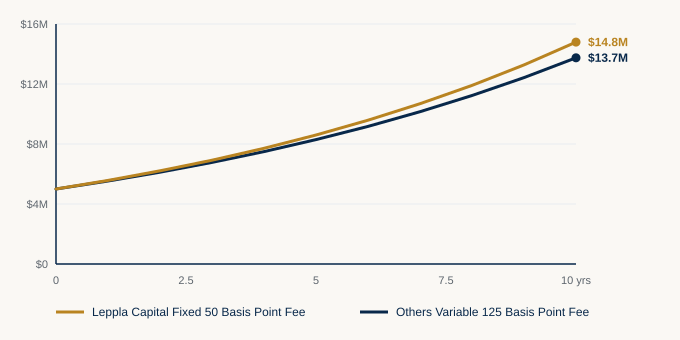

How We Invest
We match the structure to the job.
All decisions start with a review of your historical cash flows and future cash needs. From there, operating cash is scheduled by duration and longer reserves are layered by risk. Fees are fixed, published, and locked for two years.
Before any portfolio conversation, we map how money actually moves. That means looking at historical cash flows and the bills, distributions, payroll, dues, grants, and reserves that are coming. The point is simple: know what must stay available, and when.
Only after that map is clear do we decide what belongs in Layered Cash Management, what can sit in the Securities Investment Pyramid™, and whether one structure or both is the right fit.
- Review historical inflows and outflows
- Identify known near-term needs and contingency reserves
- Separate operating cash from longer-horizon capital
- Then assign each dollar to the structure that matches its job
Structure one
25 Basis Points · locked 2 years
Layered Cash Management
Once the cash-flow review is done, the first question is not “what should we buy?” It is “what must stay available, and when?” Layered Cash Management answers that question. It is built for surplus operating cash that still has a job: payroll, dues, benefits, grants, payables, and the reserve that keeps the organization steady.

Philosophy
Cash that pays bills is not an investment theme. It is a scheduling problem. We keep your bank as the front door, then place surplus cash into duration sleeves so money is ready when it is needed. As dates approach, liquidity flows downhill toward the bank. We do not chase yield by locking operating capital into products you cannot exit.
How we build it
From the cash-flow map we set an insured operating float at your bank, then schedule the rest across near-term, quarterly, annual, and optional second-year sleeves. Holdings are primarily U.S. Treasuries timed to that calendar. The fee is 25 basis points, locked for two years.
What this is not
It is not a substitute for your checking relationship. It is not a long-horizon equity mandate. And it is not a place for illiquid, high-fee products that look attractive on a slide and fail when cash is actually required.
Structure two
50 Basis Points · locked 2 years
Securities Investment Pyramid™
After operating needs are covered, some capital can stay invested longer. The Securities Investment Pyramid™ is the account for that capital. It is separate from the bank. It is governed by risk, not by next month’s bills. Broader exposure is added only with written approval.

Philosophy
Longer reserves deserve a framework, not a product pile. We build from the foundation up: stability first, then market exposure, then more selective risk only where the mandate and written approval allow. The goal is disciplined participation in markets without confusing reserve capital for operating cash.
How we build it
The cash-flow review tells us what is truly surplus. That surplus is placed in a distinct account and constructed in layers by risk tolerance. Foundational and fixed income holdings come first. Market-beta and higher layers are added only as the written policy supports them. The fee is 50 basis points, locked for two years.
What this is not
It is not a brokerage product shelf. It is not a replacement for payroll or checking. And it is not permission to stretch into complex, illiquid holdings because a presentation made them look sophisticated.
Fees
You should keep more of what you earn
Same starting capital. Same assumed return. Different fees. The gap is fee drag alone.

Difference from fee drag alone: roughly $1.1M
Hypothetical illustration only. $5,000,000 starting capital, 12% gross annual return compounded quarterly, 10-year horizon. Variable fee shown at 1.25% per year (31.25 bp per quarter). Leppla Pyramid at 50 bp per year (12.5 bp per quarter). Not actual or projected performance.
Let's Discuss
Tell us whether the need is operating cash, longer reserves, or both.